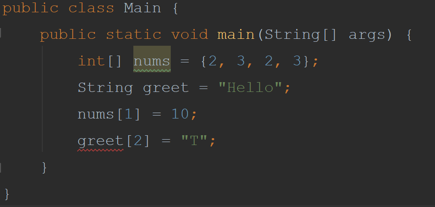
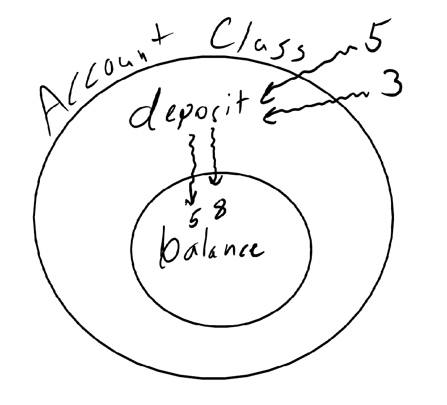

For the this unit we will walk through an example of a class and follow our 4 steps in creating it. Were going to use a
simple example of data abstraction. We will make an Integer Set. The class will be a set of numbers that are of any size
(number of integers), it can only hold integers and it cannot contain any duplicates. Examples:
{3, 2, 6} -> is an appropriate set
{3, 2.5, 1} -> not appropriate
{3, 7, 3} -> not appropriate
First we want to think about what are the public methods to make up our interface. We will want to main operations,
Insert and Remove an integer. Now we need to look at what those methods are going to do. We ask 3 questions:
Prerequisites for correctness Requires clause
What does it change? Modifies clause
What does the method do? Effects clause
This clause is used to to let us specify what the caller of a method has to ensure in order for that method
to run properly. There is a precondition that needs to satisfied for method to operate in expected way. Example:
public double deposit(double amt){
balance += amt;
return balance;
}
We want the caller of this method that this amount should never be less than 0. In a comment above the method we write
//Requires amt >= 0
This lets the user knows that if the requires clause is not met the method may not operate properly.
To write modifies clause first understand the concept of mutability. This idea is that we can change an object and it stays changed. There are some items in java that are not mutable, mainly strings, cannot be modified. To see this effect create an array and create a string. We can modify an index of a string but not an index of a string.
Looking at our deposit method. We have a class we will call Account, a method that is public called deposit, and a private implementation called balance. When we call deposit we pass in amt. The deposit method changes the balance. Example: make two deposits one for 5 and one for 3. Both times it modifies balance which as now increased to 8.
To show that this method changes something we write a modifies clause. Example:
//Modifies: this
We only say this because we are modifying its own class. We do not want to give away private details to the public.
So we say only this. An example when we would need to specify a class would be if we had an ArrayList<Double> named
deposits that kept a list of all the deposits. We would add to the clause
//Modifies: this, deposits
This clause indicates the purpose of the method, it is where you explain what the method does. Our deposit example takes
in amt and adds it to the deposit. It then returns the new balance. Example:
//Effects:adds amt to balance
returns balance
Recall out Integer set class. What is the appropriate Specification for the following method:
public void insert(int num){We do not write the code yet that is the final step where we implement it.
body
}